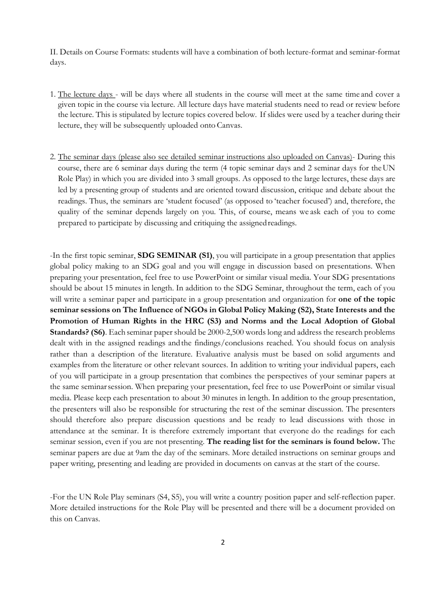
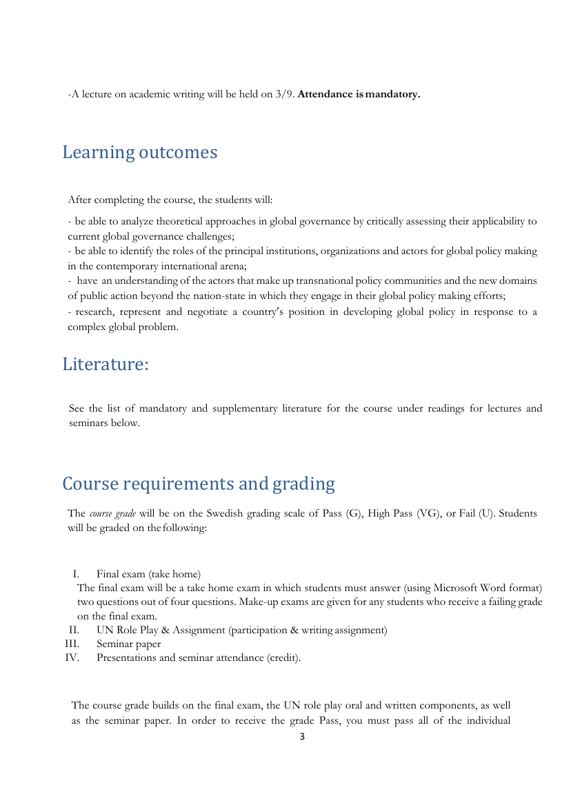
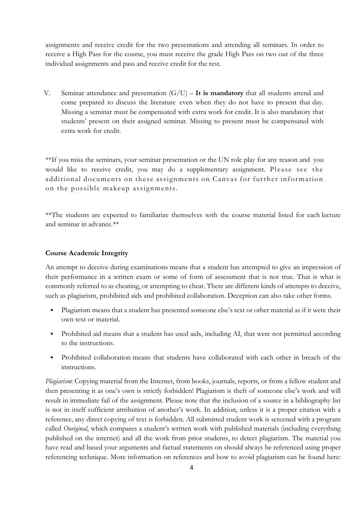

Belägg för examinationsmatrisens markeringar · Källa: kursguide H25
Tabellen nedan styrker examinationsmatrisens markeringar för AG2110 mot kursguide H25. Kursen examineras genom en hemtenta, ett UN Role Play (position paper + självreflektion), individuella seminariepapper samt obligatoriska seminariepresentationer.
| Examinationsform (per matris) | Citat ur kursguide H25 | Källa |
|---|---|---|
| Uppsats / research paper | The final exam will be a take home exam in which students must answer (using Microsoft Word format) two questions out of four questions. Make-up exams are given for any students who receive a failing grade on the final exam. |
Sid 3 — Se sida → |
| Policy brief / policyanalys | For the UN Role Play seminars (S4, S5), you will write a country position paper and self-reflection paper. More detailed instructions for the Role Play will be presented and there will be a document provided on this on Canvas. |
Sid 2 — Se sida → |
| Seminarieinlämning / memo | … each of you will write a seminar paper and participate in a group presentation and organization for one of the topic seminar sessions … Each seminar paper should be 2000-2,500 words long and address the research problems dealt with in the assigned readings and the findings/conclusions reached. You should focus on analysis rather than a description of the literature. … The seminar papers are due at 9am the day of the seminars. |
Sid 2 — Se sida → |
| Muntlig presentation | In the first topic seminar, SDG SEMINAR (S1), you will participate in a group presentation that applies global policy making to an SDG goal … Your SDG presentations should be about 15 minutes in length. In addition to writing your individual papers, each of you will participate in a group presentation that combines the perspectives of your seminar papers at the same seminar session. … Please keep each presentation to about 30 minutes in length. |
Sid 2 — Se sida → |
| Seminariedeltagande | Seminar attendance and presentation (G/U) – It is mandatory that all students attend and come prepared to discuss the literature even when they do not have to present that day. Missing a seminar must be compensated with extra work for credit. |
Sid 4 — Se sida → |
| Rollspel / simulation | Finally, the course gives students the opportunity to participate in a simulated exercise on global governance, a UN role-play. For the UN Role Play seminars (S4, S5), you will write a country position paper and self-reflection paper. |
Sid 1, 2 — Se sida → |

Sida 2 — Course formats, SDG seminar, topic seminars, UN role play
Sida 3 — Course requirements: final exam + UN role play + seminar paper
Sida 4 — Seminar attendance + presentation (G/U)